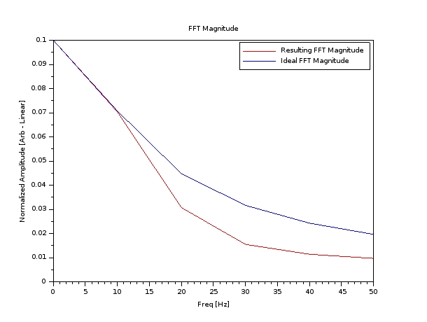
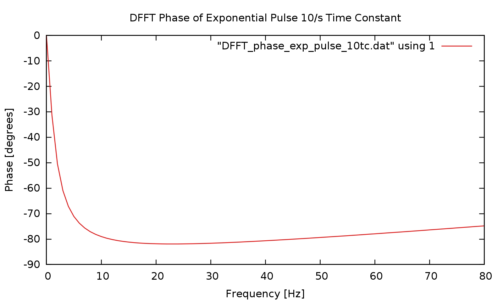

Discretized Fourier Transform of Exponential Pulse Using SciLAB
Discussion:
In this section, we will continue verification of the Fortran 2003 code by running it against a
an exponential pulse that has a time constant of 1/10 seconds. We expect to see an exponential function for the
magnitude, and a characteristic phase plot as shown below. As before, we will first generate a
DFFT in SciLAB to enable a meaningful comparison.
Introduction:
First, we start with SciLAB to generate a an exponential function, and multiply it by a 100% duty-cycle
square wave, of duration 1 seconds. The resulting waveform is sampled at 1000Hz, and the data points are
saved into a CSV file. We also perform a DFFT in SciLAB so that we may compare the results to the output
of our Fortran 2003 code that uses the FFTW3 algorithm. The SciLAB code is shown below:
SciLAB code to generate an exponential pulse of 1/10 seconds time constant, sampled at 1000Hz, and its DFFT.
Download the code by clicking the link below:
SciLAB code file to generate exponential pulse
We then run the code and obtain plots generated by SciLAB. These results are shown below:
Image of 1Hz Square Wave using SciLAB

Download the image by clicking the link below:
Image of 1Hz square wave
Image of the DFFT of a 1Hz Square Wave, sampled at 1000Hz, using SciLAB

Download the image by clicking the link below:
Image of FFT of 1Hz square wave generated in SciLAB
Saving of time-domain data into a comma-separated value (CSV) file
The time-domain data is selected in SciLAB and saved into a CSV file.
A portion of the data is shown below:
The data may be downloaded by clicking the link below:
CSV file containing discretized exponential pulse data.
Processing of CSV file into format suitable for input into Fortran 2003 DFFT code.
Since the output of SciLAB is a comma separated value (CSV) file, a method is needed that will process
that file into another file, where the commas are removed and each data element is on a separate line.
Additionally, a the data elements need to be reformatted into fixed floating point, since the "e"
floating point format was noticed to possibly cause errors when input into the FFTW3 algorithm.
These operations were done using a Python script, with its powerful object-oriented file techniques and
its included CSV library. The Python script is shown below:
Python script to process CSV file by stripping commas and producing one data element per line
Python script that removes commas and produced one data element per line
Run by typing: ./convert_csv.py infile.csv outfile.dat
where infile.csv is the data file in CSV format, and outfile.dat is the processed file
Obtain the line count of the processed file by typing: wc -l outfile.dat
A portion of the processed CSV file is shown below:
The processed data may be downloaded by clicking the link below:
Output of Python script
Obtaining Discretized Fast Fourier Transform of Processed CSV File
Now that the CSV file has been processed into a usable form, the data elements can now be fed
into the FFTW3 DFFT algorithm. The algorithm is used within a Fortran 2003 program.
Click this link to see the Fortran 2003 DFFT code.
Running the Fortran 2003 DFFT Program and Obtaining Output Files
The Fortran 2003 code is compiled and run with the processed CSV file as input. The resulting files
include the DFFT magnitude and phase.
Compile by typing: gfortran -o a.out data_file_FFTW.F03 -lfftw3
where a.out is the name of the executable, data_file_FFTW.F03 is the file name of the source code.
Run by typing: ./a.out outfile.dat DFFT_mag_file.dat DFFT_phase_file.dat
where outfile.dat is the output of the Python script, DFFT_mag_file.dat is the DFFT magnitude
DFFT_phase_file.dat is the DFFT phase (if applicable)
The line count can be obtained by typing: wc -l outfile.dat
The Output Files From the Fortran 2003 DFFT Program
After the Fortran 2003 DFFT program has been run correctly, magnitude and phase files should
appear.
The program output is verbose (for debug) purposes and the screen output is shown below:
The full text may be downloaded here.
A section of the magnitude output file is shown below:
The phase file is shown below for completeness:
Output files from running Fortran 2003 code
The data files may be downloaded by clicking the links below:
Output of DFFT Fortran program as magnitude
Output of DFFT Fortran progream as phase
Plots of the magnitude and phase output files using GNUPlot
The magnitude and phase output files are plotted with GNUPlot. A GNUPlot script file was created
to facilitate quality plotting.
GNUPlot script file
The GNUPlot script file may be downloaded by clicking here.
Run by typing gnuplot exp_pulse_10tc_gnuplot_macro.txt or start GNUPlot and enter
load "exp_pulse_10tc_gnuplot_macro.txt" at the gnuplot command prompt
Magnitude Plot

Phase Plot

Discussion:
There appears to be good correlation between the DFFT magnitude plot generated by SciLAB and
the DFFT magnitude plot generated by the Fortran 2003 code. Of note are the anomalous
phase results in the output of the Fortran 2003 code. It is unknown at this time what is causing it.
Back to Current Projects - FFTW3